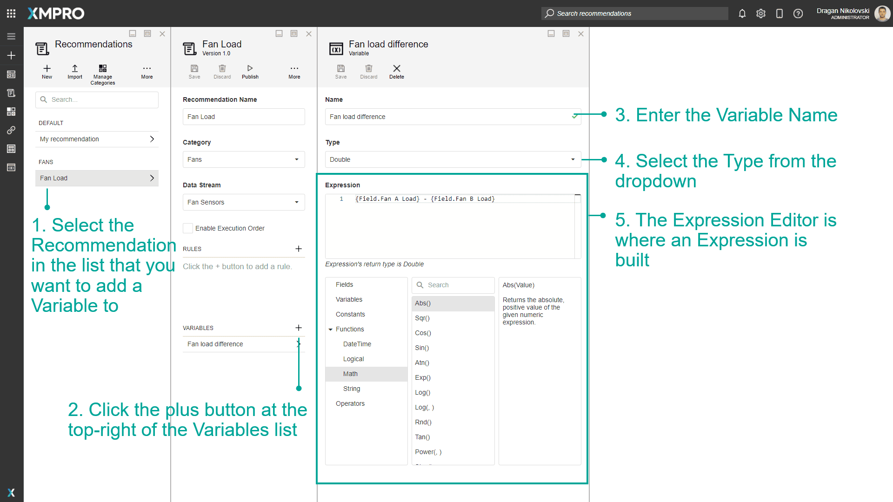
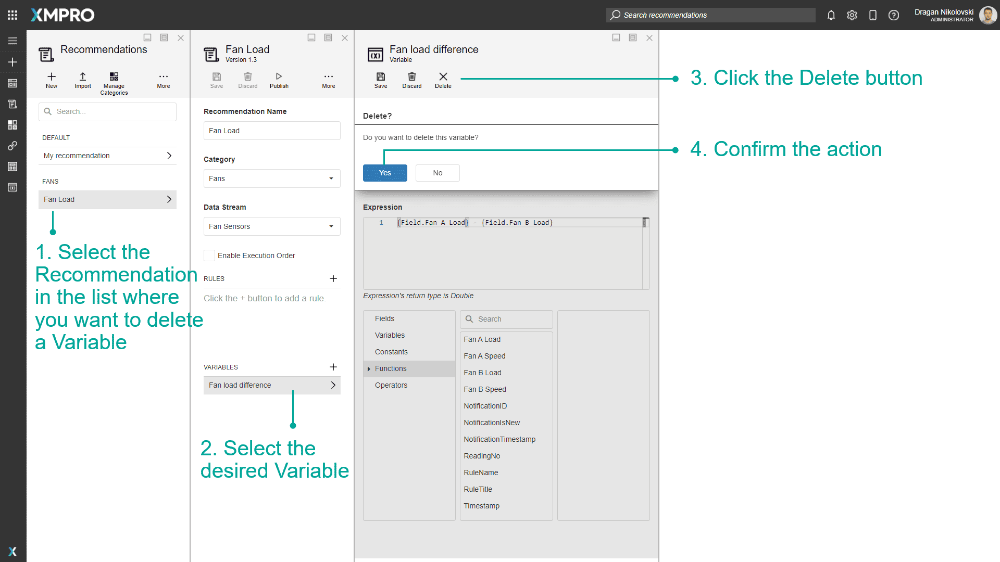

Manage Variables
Variables are placeholders used to hold and maintain certain values. In some cases, it is possible to not know some of the values that you might want to compare within rules or conditions. In this case, you can use Variables where the real value can be substituted in later. Expressions can also be configured and are useful for doing certain calculations and returning results which can also be used within Recommendation Rules.
Note
It is recommended that you read the articles listed below to improve your understanding of Recommendations.
Create Variables
To create a Variable, follow the steps below:
Select the Recommendation in the list that you want to add a Variable to.
Click the plus button at the top-right of the Variables list.
Enter the Variable Name.
Select the Type from the dropdown.
The Expression Editor is where an Expression is built. At the top is a text area in which you can type the Expression. Below the text area are three sections - the categories, the Expression terms, and the description areas. Clicking on a category will show different items in the Expression terms area, and clicking on an Expression term will show a description of the term in the description area.
Double-clicking an Expression Term will enter that term in the text area at the position of the cursor.

Delete Variables
To delete a Variable, follow the steps below:
- Select the Recommendation in the list where you want to delete a Variable.
- Select the desired Variable.
- Click the Delete button.
- Confirm the action.

Last modified: August 05, 2025